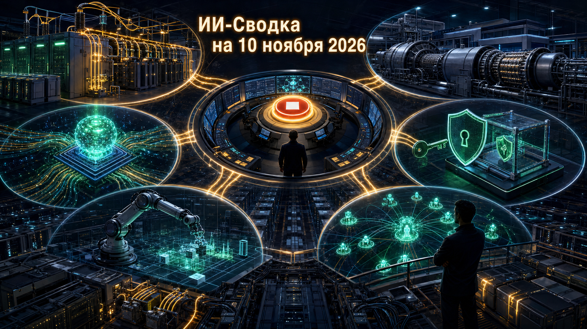

Повестка дня показывает, что конкуренция в ИИ всё сильнее зависит не только от качества моделей, но и от среды их исполнения: энергии, управляемости вычислений, стоимости агентных операций и симуляции для робототехники. Anthropic закрепляет генерацию для дата-центров, OpenAI строит централизованный контур остановки исследовательских нагрузок, а Meta* и разработчики инструментов делают агентные сценарии дешевле и более управляемыми.
Практический вывод для компаний: при внедрении агентов нужно заранее проектировать не только выбор модели, но и контроль доступа, аварийную остановку, наблюдаемость расходов и устойчивость инфраструктуры.
Envision Energy, по данным TechRadar, заявила о коммерческом запуске интегрированной 800V DC-системы питания на площадке Galaxy AI в Уланчабе во Внутренней Монголии. Архитектура преобразует входящие 10 кВ переменного тока в 800V постоянного тока и объединяет твердотельный трансформатор с накопителями энергии.
Цель такой схемы — сократить число этапов преобразования энергии и сглаживать быстрые изменения нагрузки GPU-кластеров. Независимые показатели эффективности, стоимости и стабильности под полной нагрузкой пока не раскрыты, поэтому преимущества следует считать заявлениями поставщика. Но сам коммерческий запуск показывает, что энергораспределение становится отдельным полем инженерной конкуренции в ИИ-инфраструктуре.
Meta Superintelligence Lab представила Muse Ember — более лёгкую модель линейки Muse для повторяющихся агентных операций, сообщает TechCrunch. Компания ориентирует её на вызовы инструментов, извлечение данных, маршрутизацию запросов, подзадачи программирования и работу с длинными документами; модель поддерживает мультимодальный ввод.
Ember позиционируется как дешёвый исполнитель рядом с более мощной Muse Wonder. Такой двухуровневый подход важен для экономики агентов: дорогую reasoning-модель можно оставлять для планирования и нестандартных решений, а массовые операции передавать компактной модели. Заявленные возможности и сравнения стоимости исходят от компании и требуют независимой проверки в реальных задачах.
Anthropic выпустила Claude Code 2.1.321. В этой версии Claude Fable 5.2 стала Fable-моделью по умолчанию, а remote control получил настройку через settings-файл.
Существеннее для корпоративного использования исправления безопасности: changelog указывает на защиту OAuth refresh tokens при редиректах MCP, усиление permission checks для sandboxed Bash и корректную выдачу запросов на доступ к защищённым файлам. Это напоминает, что уязвимости агентного окружения часто возникают не в самой модели, а на стыке инструментов, файловой системы, авторизации и политик разрешений.
NVIDIA объявила на конференции CoRL о выпуске GR00T 2, Isaac Lab 3.0 и новых открытых бенчмарков, созданных совместно с партнёрами для обучения роботов в симуляции. Компания связывает обновления с более точной подготовкой манипуляторов и масштабированием робототехнических экспериментов.
Для physical AI симуляция становится способом накапливать данные и проверять поведение до выхода в реальную среду, где ошибки дороги или опасны. Открытые бенчмарки также могут облегчить сопоставление подходов разных команд, хотя реальные показатели переноса навыков из симуляции на конкретное оборудование будут зависеть от задачи, датчиков и качества дообучения.
OpenAI сообщила о системе Control Room — центральном контуре, предназначенном для отслеживания и остановки модельных workloads в исследовательской инфраструктуре. Анонс описывает её как механизм управления выполнением задач моделей на уровне всей среды исследований.
Появление такого слоя особенно важно на фоне роста длительных агентных запусков, которые могут использовать инструменты, сеть и распределённые вычисления. Централизованная видимость и возможность остановки не заменяют sandboxing и оценку рисков, но создают необходимый операционный контур: критические нагрузки должны быть не только наблюдаемы, но и быстро отключаемы при отклонении от политики.
Anthropic приобретает газовые генераторы Caterpillar, первоначально заказанные OnePWR, примерно на $3,4 млрд, сообщает TechCrunch со ссылкой на Financial Times. По данным публикации, оборудование может обеспечивать до 1,7 ГВт мощности.
Если параметры сделки подтвердятся сторонами, это будет заметным сдвигом: лаборатория, ранее в основном арендовавшая вычислительные мощности, закрепляет физический энергетический ресурс. Доступ к электроэнергии становится столь же дефицитным фактором, как GPU и земельные площадки под дата-центры. Сумма, мощность и условия сделки пока следует атрибутировать публикациям СМИ: прямого раскрытия Anthropic, Caterpillar или OnePWR в доступном пуле нет.
Alibaba Qwen выпустила Qwen Code 0.27.1, стабильное обновление CLI-агента для разработки. В списке изменений указаны именование активной shell в стартовом контексте, исправления для общих GitHub runner-ов и изменения телеметрии; известных breaking changes для версии не заявлено.
Изменения выглядят инкрементальными, но важны для команд, которые используют долгоживущие управляемые сессии и автоматизированные workflows. Конкуренция coding-агентов всё меньше сводится к качеству одной модели: надёжность контекста, интеграции с CI/CD и наблюдаемость становятся базовыми свойствами среды исполнения.
*Meta и ее сервисы - в России запрещены